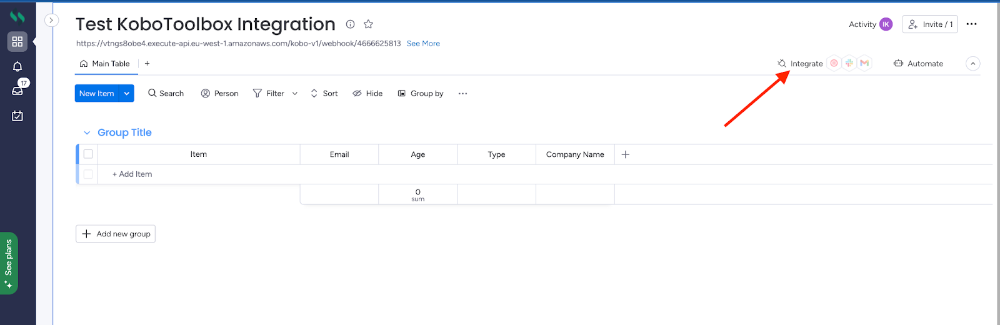
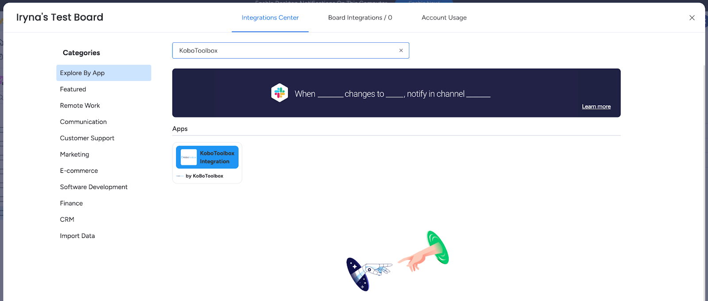
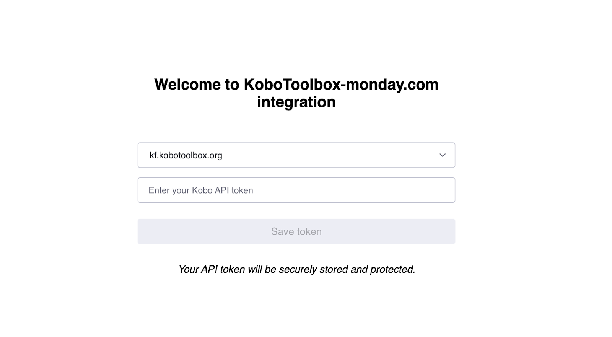
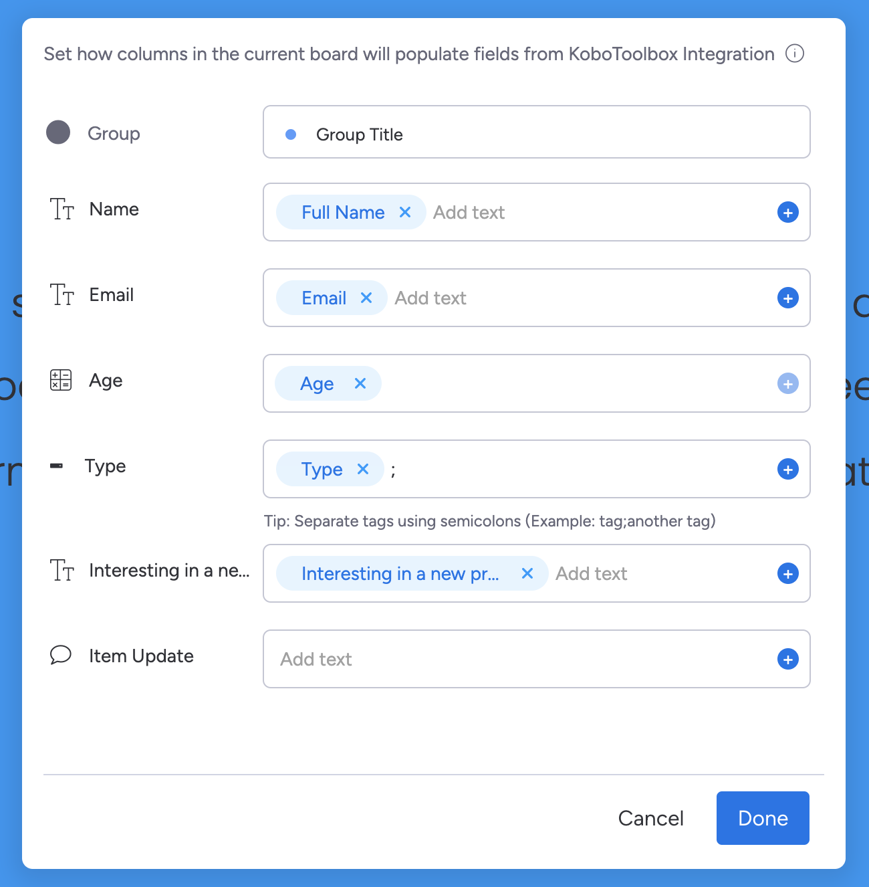
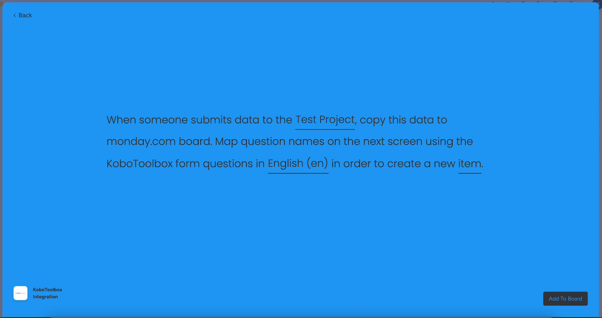
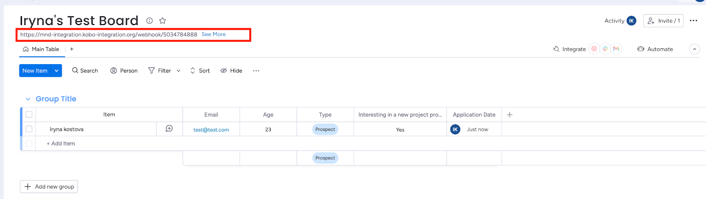
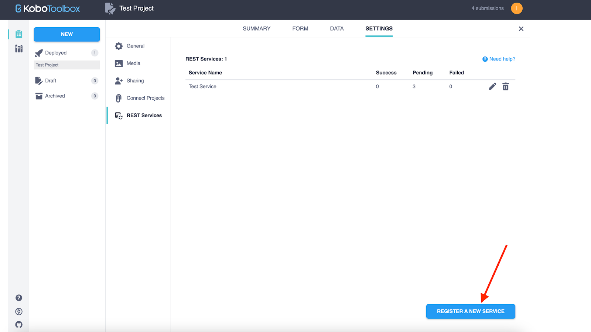
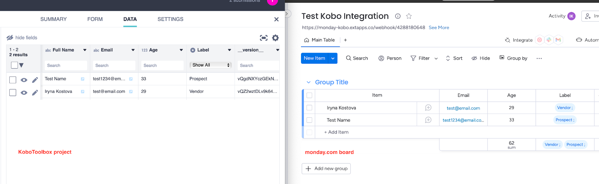

Search the knowledge base, browse our resources, and visit our forum for more detailed information
Read in English | Leer en español | اقرأ باللغة العربية Dernière mise à jour : 3 mai 2024
Cet article décrit la version préliminaire de l'intégration entre KoboToolbox et Monday.com. Comme pour toute nouvelle version, il peut y avoir des bugs inattendus. Si vous rencontrez des problèmes, veuillez nous contacter immédiatement afin que nous puissions les résoudre. ⚠️ Nous recommandons des tests rigoureux avant de déployer cette intégration pour des projets critiques. ⚠️
L’intégration KoboToolbox permet aux utilisatrices et utilisateurs de synchroniser facilement les données de leur projet depuis un projet KoboToolbox vers un tableau monday.com.
En quelques étapes seulement, vous pouvez configurer l’intégration pour copier automatiquement les soumissions de données reçues dans KoboToolbox vers n’importe lequel de vos tableaux monday.com. Cette intégration réduit considérablement le travail manuel impliqué dans la copie et le collage des données de projet de KoboToolbox vers monday.com.
Processus simplifié de connexion des projets KoboToolbox avec les tableaux monday.com.
Mappage facile des champs monday.com aux questions KoboToolbox en utilisant n’importe quelle langue de libellé définie dans le formulaire.
Synchronisation en temps réel des nouvelles soumissions créées pour créer de nouveaux éléments.
Créez un compte sur KoboToolbox si vous n’en avez pas déjà un. En savoir plus sur la création d’un compte.
Préparez un tableau monday.com reflétant la structure de votre projet KoboToolbox afin que tous les champs de votre projet KoboToolbox soient représentés sur un tableau monday.com.
Pendant la configuration de l’intégration, vous devrez authentifier l’accès à votre compte en fournissant votre clé API KoboToolbox. Apprenez comment obtenir votre clé API.
**Remarque :** La clé API est un identifiant unique utilisé pour l'authentification. Dans KoboToolbox, elle est appelée votre **clé API**. Dans monday.com, elle est appelée votre **jeton API**.
Installez l’intégration KoboToolbox depuis le marché d’applications monday.com.
Une fois installée, accédez à votre tableau précédemment préparé pour configurer l’intégration.
**Remarque 1 :** Une seule recette d'intégration KoboToolbox peut être établie par tableau monday. **Remarque 2 :** Seule la personne qui a installé la recette peut la modifier, tous les autres membres du tableau peuvent uniquement l'ouvrir en mode lecture seule.
Accédez au menu Integration en haut à droite. 
Trouvez KoboToolbox dans le Centre d’intégrations. 
Cliquez sur l’intégration KoboToolbox et choisissez la recette incluse.

Autorisez l’application KoboToolbox :
Entrez l’URL du serveur KoboToolbox où vous avez créé votre compte. Pour Le serveur KoboToolbox mondial, utilisez l’URL du serveur https://kf.kobotoolbox.org. Pour Le serveur KoboToolbox Union européenne, utilisez l’URL du serveur https://eu.kobotoolbox.org.
Entrez votre clé API KoboToolbox dans le champ « Kobo API token » 
**Remarque :** Pour modifier la clé API après la configuration de la recette d'intégration, l'application d'intégration KoboToolbox doit être complètement réinstallée.
Pour la configuration de la recette, configurez les paramètres suivants :
Choisissez le projet KoboToolbox approprié que vous souhaitez connecter à votre tableau monday.com dans le menu déroulant. Seuls les projets déployés sont disponibles pour la sélection.
Choisissez la langue de libellé dans le menu déroulant. Si votre formulaire contient plus d’une langue, sélectionnez la langue qui doit être utilisée pour mapper les questions aux colonnes. La langue sélectionnée ne sera affichée que pour mapper les questions KoboToolbox avec les colonnes monday.com. Les données affichées dans le tableau monday.com utiliseront toujours la structure de données XML sous-jacente au lieu des libellés traduits de Sélection unique ou Sélection multiple.
Cliquez sur Item pour configurer le mappage des questions aux colonnes. 
Lorsque vous avez terminé la configuration de la recette, cliquez sur le bouton Add to Board. 
Après avoir terminé la configuration de l’intégration, vous devez configurer les services REST sur KoboToolbox afin de synchroniser automatiquement les données de votre projet avec le tableau monday.com. Pour configurer les services REST sur KoboToolbox :
Copiez le lien d’intégration depuis la notification de configuration de l’intégration ou depuis la
description sur votre tableau monday.com.

Connectez-vous à votre compte KoboToolbox.
Accédez au projet que vous souhaitez connecter. Ouvrez l’onglet PARAMÈTRES, puis choisissez Services
REST, et cliquez sur le bouton ENREGISTRER UN NOUVEAU SERVICE.

Entrez « intégration monday.com » comme nom de service et entrez le lien d’intégration dans le champ « URL de point de terminaison ».
Dans la section « En-têtes HTTP personnalisés », insérez la valeur « webhook-auth » dans
le champ « Nom » et entrez votre clé API KoboToolbox dans le champ « Valeur ».

Cliquez sur le bouton ENREGISTRER.
Vous êtes prêt ! Chaque nouvelle soumission à votre projet KoboToolbox sera automatiquement ajoutée à votre tableau monday.com selon votre configuration de recette.\

Remarques importantes
Toute mise à jour apportée à un formulaire ou à une soumission individuelle dans un projet KoboToolbox qui a déjà été ajouté à votre tableau monday.com ne sera pas automatiquement mise à jour sur votre tableau monday.com. Les modifications telles que la suppression ou le renommage d’une question, la modification d’une hiérarchie de groupe, la modification d’un groupe en groupe répété, ou la modification des libellés dans le formulaire KoboToolbox n’affecteront pas les éléments de votre tableau monday.com.
La localisation n’est pas automatiquement prise en charge dans le mappage dynamique des champs. Pour transférer une localisation ou des coordonnées de Kobotoolbox vers une colonne monday.com :
Créez deux colonnes sur votre tableau monday.com pour que les données de localisation soient renseignées : une colonne de type Texte et une deuxième colonne de type Localisation. Il est important de leur donner des noms identiques.
Dans le mappage dynamique des champs, mappez la localisation KoboToolbox vers la colonne de type Texte monday.com.
La colonne de type Localisation n’apparaîtra pas dans le mappage dynamique.
La soumission de localisation KoboToolbox sera automatiquement renseignée dans la colonne de type Localisation monday.com.
La colonne Fichier n’est pas automatiquement prise en charge dans le mappage dynamique des champs. Pour transférer des fichiers de KoboToolbox vers monday.com :
Ajoutez une colonne Fichier au tableau monday.com et donnez-lui le même nom que celui utilisé pour le champ Fichier dans votre projet KoboToolbox. Le même nom de colonne de fichier doit être utilisé dans monday.com et KoboToolbox.
Si vous n’avez pas installé la recette d’intégration, terminez le processus d’installation. Une fois l’installation terminée, accédez au Centre d’intégrations, ouvrez la recette existante et cliquez sur le bouton Update automation pour que les dernières modifications fonctionnelles soient appliquées.
Aucune autre modification de configuration n’est nécessaire. Les fichiers seront désormais automatiquement transférés du projet KoboToolbox vers la colonne appropriée de votre tableau monday.com en fonction du nom de la colonne.
Afin de garantir des performances élevées dans les tableaux monday.com, monday.com limite le nombre de colonnes par tableau : 200 colonnes pour les comptes non-entreprise et 300 colonnes pour les comptes entreprise.
Que sont les services REST ?
Plus d’informations sur les services REST sont disponibles dans cet article d’aide.
Qu’est-ce que le mappage dynamique des champs ?
Le mappage dynamique des champs est un appariement des champs représentés sur le tableau monday.com avec les questions appropriées du projet KoboToolbox.
Que se passe-t-il si je modifie mes données sur le compte Kobo ?
Toute mise à jour apportée à un formulaire ou à une soumission individuelle dans votre projet KoboToolbox qui a déjà été envoyée au tableau monday.com ne sera pas automatiquement synchronisée.
Que se passe-t-il si je modifie mes données sur le tableau monday.com ?
Les modifications apportées aux données représentées sur le tableau monday.com ne seront pas reflétées dans le projet KoboToolbox.
Que se passe-t-il si je dois modifier la langue ultérieurement ?
La sélection de la langue n’affecte que la vue de mappage dynamique des champs de la configuration de la recette d’intégration. Les données du tableau ne seront pas traduites.
Que se passe-t-il si je supprime le projet sur KoboToolbox ?
Si un projet est supprimé dans KoboToolbox, l’intégration ne fonctionnera plus jusqu’à ce que la recette d’intégration soit mise à jour avec un nouveau projet.
Que sont les « types de colonnes » ?
Un « type de colonne » dans monday.com est un type de question dans KoboToolbox.
Quels types de questions de KoboToolbox peuvent être transférés vers monday.com ?
Tous les types de questions sauf XML externe sont pris en charge par monday.com. Si vous ne trouvez pas le type de colonne approprié sur le tableau monday.com, utilisez une colonne de type Texte.
Pour transférer les types de questions Point et Zone dans KoboToolbox vers le type de colonne Localisation sur le tableau monday.com, utilisez l’approche décrite dans la Remarque importante n° 2. S’il n’est pas crucial d’avoir des données transférées vers la colonne Localisation, alors une seule colonne de type Texte peut être utilisée sans ajouts.
Comment les questions Sélection multiple dans KoboToolbox sont-elles transférées vers monday.com ?
Pour les questions Sélection multiple, une colonne de type Liste déroulante doit être utilisée sur le tableau monday.com pour que toutes les options sélectionnées soient correctement transférées vers le tableau.
Comment les questions Sélection unique dans KoboToolbox sont-elles transférées vers monday.com ?
Pour les questions Sélection unique, utilisez une colonne de type Statut (limitée à 40 options de libellé), Liste déroulante ou Texte pour que l’option sélectionnée soit correctement transférée vers le tableau.
Puis-je synchroniser plus d’un projet KoboToolbox avec mon tableau monday ?
Non. Une seule recette d’intégration KoboToolbox peut être établie par tableau. Avoir plus d’une recette entraînera une erreur de serveur.
Pourquoi ne puis-je pas modifier une recette créée par un autre membre du tableau monday.com ?
Seul le membre du tableau qui a créé la recette peut la modifier. Tous les autres membres du tableau peuvent uniquement l’ouvrir en mode lecture seule.
Did you find what you were looking for? Was the information clear? Was anything missing?
Share your feedback to help us improve this article!